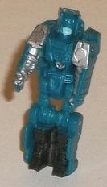
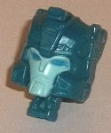
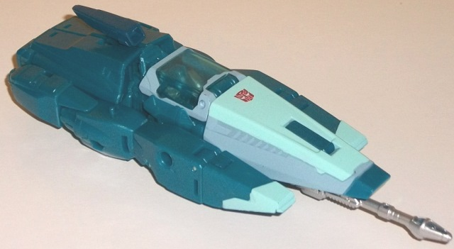
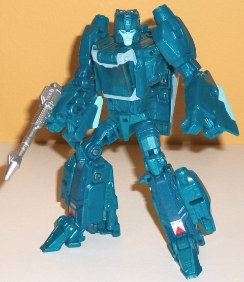

Allegiances
: Autobot
Size
: Deluxe
Difficulty of Transformation
: Medium
Color Scheme
: Moderately dark glittery
aquamarine and some silver, light pale greenish blue, light pale gray,
black, transparent blue, dark metallic blue, moderately dark red, and light
sky blue
Rating
: 8.8


Hyperfire-- Blurr's
Titan Master-- has a robot mode with similar colors as Blurr, with the
main plastic color being a fairly dark glittery aquamarine, which is a
pretty nice shade. For a Titan Master in robot mode, Hyperfire has an impressive
number of paint apps, with black on the legs, silver on the arms, and some
light greenish blue on the mouth. His mold detailing is fairly nondescript,
with pretty typical "robotic humanoid" detailing on the arms and legs and
a few triangular details on the main body. His head is rather unique, with
large side headcrests, and a big visor with a "normal" mouth. As with all
Titan Masters, Hyperfire can move at the head and back-and-forth at the
shoulders, as well as at the hips and knees (both of the latter as one--
the legs are connected together). In head mode, Hyperfire looks like a
typical Blurr head--edging more towards his G1 design than his more modern
"IDW" design-- with the head antennae made considerably smaller because
of the space limitations in Titan Master Mode. The greenish blue face with
sky blue eyes looks nice, and all three colors complement each other quite
well. That said, Blurr's expression is completely neutral-- I wish he had
a smile or a smirk or something.


Blurr's alternate mode
this time isn't a sportscar, but rather a futuristic speedster that's very
much an updated version of his G1 alt mode. It's practically a dart of
a hovercar, with very minimal wind resistance-- with the exception of Blurr's
trademark rectangular antennae near the back. The mold detailing is fairly
minimal in this mode, and given how streamlined Blurr's supposed to be,
I really don't mind it. There isn't any robot mode extras in this mode
whatsoever-- everything is tucked in tight, and proportionally this is
just a great alt mode if you don't mind the "futuristic-ness" of it. There's
a 5mm-port-attachable silver gun, which you "should" plug underneath the
front portion of this mode, though there's a 5mm port on each side of this
mode near the middle if you want to attach that or other compatible weapons.
The main color is a glittery dark aquamarine, which is a pretty nice shade
and complements the light greenish blue and light "cool" gray paint on
the tips of the front, the nosecone, and around the cockpit. That,said,
all of the paint is pretty much up front-- there's almost no paint whatsoever
on the back end. The antennae is painted a metallic dark blue, but it's
so close to the aquamarine plastic color that it blends in with it too
well. The lack of any light blue paint apps on the back end, or painted
thrusters, or anything of the sort makes this mode a bit duller than it
should be. As you'd expect, the top window for the cockpit can flip up
and a Titan Master can fit inside. There's also one peg for a Titan Master
to plug into on the top "rim" on the sides, near the middle of this mode.
Additionally, though it may not look it, Blurr DOES have three little plastic
wheels on the bottom, so he can actually roll on a flat surface.
To get Blurr into robot
mode, the nosecone flips behind his back, the arms form the sides, and
the back end unfolds to become his legs while the center area stays his
chest. In robot form Blurr also has pretty good proportions, though they're
not as "extreme streamlined" as his
earlier Generations
toy
. He does have a few vehicle mode extras-- some bits of the front
on the back of his lower arms, the aforementioned nosecone on the back,
and-- and this last part is questionable-- the thruster sides on the lower
legs. (One could argue that this is part of his general structure and enhances
his silhouette and isn't a proper piece of "kibble". Given how streamlined
his legs otherwise are, I disagree.) The mold detailing is a little more
intricate in this mode, with some little circuitry and vent lines on his
stomach, feet, and parts of his lower legs. The big issue I have with this
mode, though, is that almost THIS ENTIRE MODE is unpainted dark aquamarine
plastic. By putting the nosecone on the back, you've taken all that paint
out of the picture, leaving only the gray on the cockpit and the greenish
blue on the face being really obvious. On the lower legs, there's some
dark metallic blue, but again, it doesn't contrast enough against the aquamarine
to really stand out. There are a couple of little silver and triangular
red deco bits near the feet, but they're not nearly enough to keep this
mode from looking way too bland. On the plus side, Blurr has excellent
articulation and balance-- he can move at the neck, shoulders (at two points),
elbows (at two points), wrist and waist rotation, and movement at the hips
(at two points) and knees. Thus you can get him into a TON of really nice
poses, and his joints are all nice and tight (but not too tight). As an
additional option, you can slide the nosecone piece off of Blurr's back
and mount it on the side of one of his arms (the nosecone piece has three
5mm ports, one on each side and one on the bottom). By turning this piece
up, it works as a "seat" of sorts for another Titan Master.
As a mold, Titans Return
Blurr w/ Hyperfire is definitely the strongest of the wave 1 deluxes--
he's got admirably few extras in either mode, and "modernizes" his old
G1 alt mode into something even sleeker, almost like a car missile of sorts.
He's also got great proportions and articulation. However, though his base
plastic color is good, he desperately, DESPERATELY needs more paint apps
and major plastic colors. The front of the car mode is all right, but the
back of the car mode and nearly all of the entire robot mode is just the
same unpainted aquamarine plastic, thus it looks much duller than it otherwise
should have been. Thus, because of this latter issue, out of the various
releases of this mold I like this one the least, even if it fits Blurr
the best.
Review by Beastbot